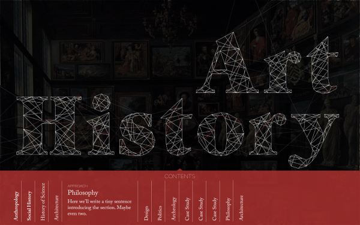
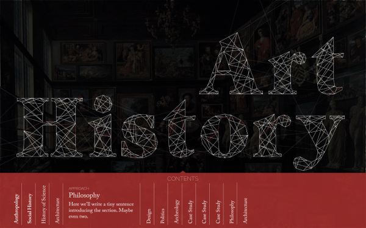

Introduction to Art History
New passion project with a bunch of friends
 

Work in Progress
Typeface: Handrawn letters / Raleway / Caslon
Here are the first sketches for a project I’m doing with a few fellow art historians. Currently it goes under a working title of ‘Interactive introduction to Art History’ and it is meant to show the subject’s connections with other fields. The thread-like lines of the lettering will react to user’s choices, with each section pulling out a certain string out of ‘Art History’ and forming a header of its own. So while my colleagues are busy writing articles, I’m learning to use HTML canvas and WebGL. If we all manage, the project will be incorporated into a new History of Art department website which is due next spring.